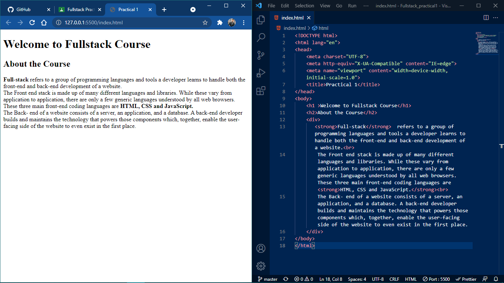
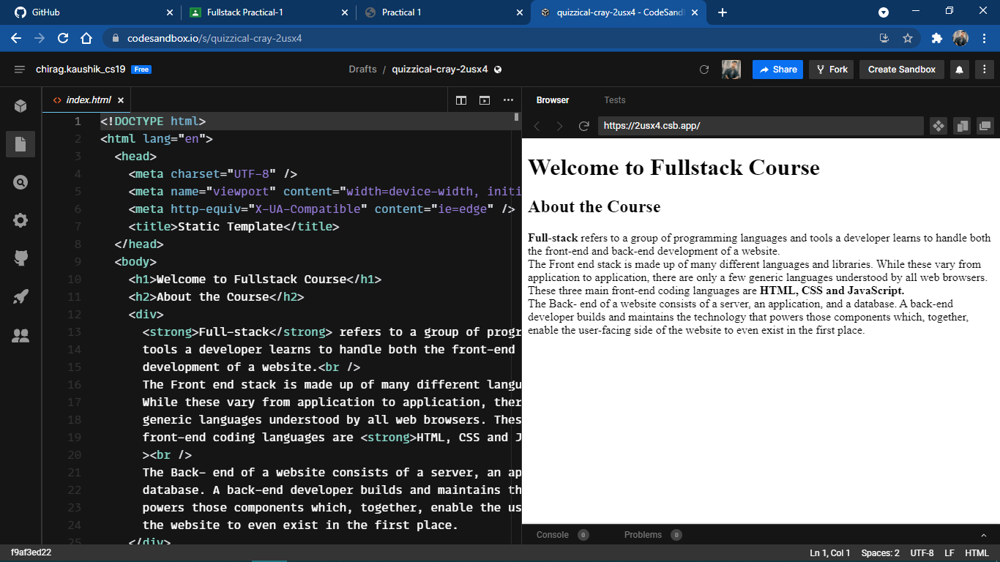

Practical 1: Create a Webpage including HTML basic Skeleton using offline HTML Editor and Online Sandbox Environment.
Welcome to Fullstack Course
About the Course
Full-stack refers to a group of programming languages and tools a developer learns to handle both the front-end and back-end development of a website.
The Front end stack is made up of many different languages and libraries. While these vary from application to application, there are only a few generic languages understood by all web browsers. These three main front-end coding languages are HTML, CSS and JavaScript.
The Back- end of a website consists of a server, an application, and a database. A back-end developer builds and maintains the technology that powers those components which, together, enable the user-facing side of the website to even exist in the first place.
Output
Offline HTML Editor

Online Sandbox Editor
